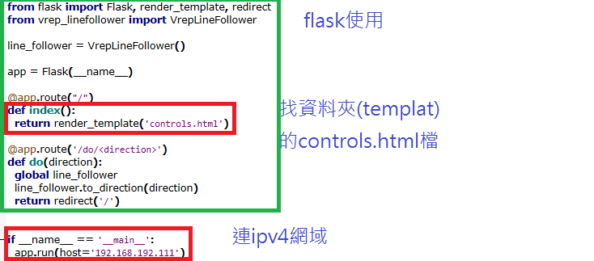
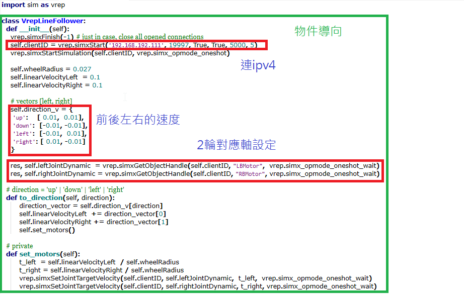
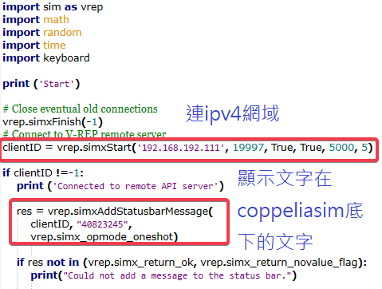
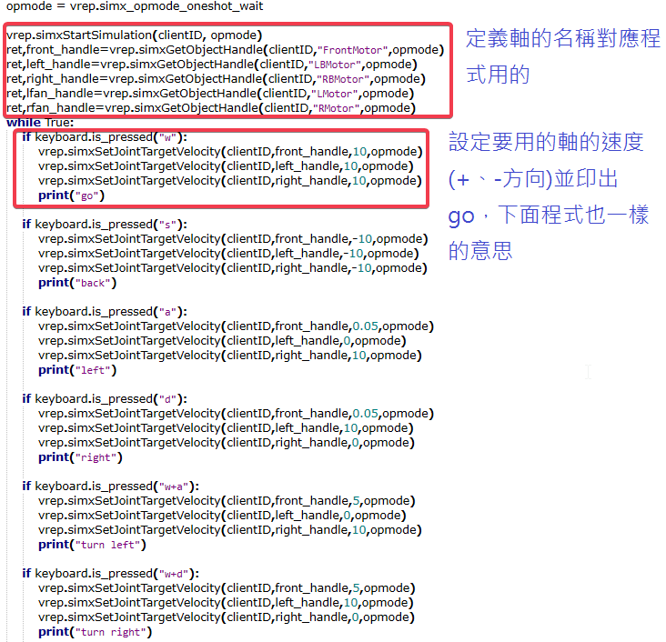
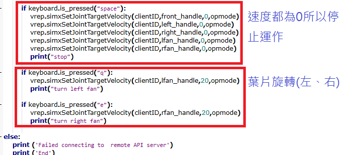

task1 <<
Previous Next >> task3
task2
掃地機器人
測試1(py檔):用簡單的機構去試程式和理解運作
測試2(py檔):套用在掃地機器人，因速度設為0，所以一開始不會動，執行py檔後應像測試1一樣轉1圈，但不知是否模擬設定有問題，所以需要測試
測試3(py檔):簡化掃地機器人，看是否為設計問題
測試5(檔同上測試4):新增x-y時間位置圖
測試6(py檔):鍵盤控制
頁面操作程式碼:
'''remoteApiConnections.txt file content:
// Let's start a continuous remote API server service on port 19997:
portIndex1_port = 19997
portIndex1_debug = false
portIndex1_syncSimTrigger = true
19998:
portIndex2_port = 19998
portIndex2_debug = false
portIndex2_syncSimTrigger = true
'''
from flask import Flask, render_template, redirect
from vrep_linefollower import VrepLineFollower
line_follower = VrepLineFollower()
app = Flask(__name__)
@app.route("/")
def index():
return render_template('controls.html')
@app.route('/do/<direction>')
def do(direction):
global line_follower
line_follower.to_direction(direction)
return redirect('/')
if __name__ == '__main__':
app.run(host='192.168.192.111')
頁面操作程式碼-1:
import sim as vrep
clientID = vrep.simxStart('192.168.192.111', 19997, True, True, 5000, 5)
if clientID != -1:
print ('Connected to remote API server')
res = vrep.simxAddStatusbarMessage(
clientID, "text",
vrep.simx_opmode_oneshot)
if res not in (vrep.simx_return_ok, vrep.simx_return_novalue_flag):
print("Could not add a message to the status bar.")
else:
print ('Failed connecting to remote API server')
class VrepLineFollower:
def __init__(self):
vrep.simxFinish(-1) # just in case, close all opened connections
self.clientID = vrep.simxStart('192.168.192.111', 19997, True, True, 5000, 5)
vrep.simxStartSimulation(self.clientID, vrep.simx_opmode_oneshot)
self.wheelRadius = 0.027
self.linearVelocityLeft = 0.1
self.linearVelocityRight = 0.1
# vectors [left, right]
self.direction_v = {
'up': [ 0.01, 0.01],
'down': [-0.01, -0.01],
'left': [-0.01, 0.01],
'right': [ 0.01, -0.01]
}
res, self.leftJointDynamic = vrep.simxGetObjectHandle(self.clientID, "LBMotor", vrep.simx_opmode_oneshot_wait)
res, self.rightJointDynamic = vrep.simxGetObjectHandle(self.clientID, "RBMotor", vrep.simx_opmode_oneshot_wait)
# direction = 'up' | 'down' | 'left' | 'right'
def to_direction(self, direction):
direction_vector = self.direction_v[direction]
self.linearVelocityLeft += direction_vector[0]
self.linearVelocityRight += direction_vector[1]
self.set_motors()
# private
def set_motors(self):
t_left = self.linearVelocityLeft / self.wheelRadius
t_right = self.linearVelocityRight / self.wheelRadius
vrep.simxSetJointTargetVelocity(self.clientID, self.leftJointDynamic, t_left, vrep.simx_opmode_oneshot_wait)
vrep.simxSetJointTargetVelocity(self.clientID, self.rightJointDynamic, t_right, vrep.simx_opmode_oneshot_wait)


鍵盤操作程式碼:
import sim as vrep
import math
import random
import time
import keyboard
print ('Start')
# Close eventual old connections
vrep.simxFinish(-1)
# Connect to V-REP remote server
clientID = vrep.simxStart('192.168.192.111', 19997, True, True, 5000, 5)
if clientID !=-1:
print ('Connected to remote API server')
res = vrep.simxAddStatusbarMessage(
clientID, "40823245",
vrep.simx_opmode_oneshot)
if res not in (vrep.simx_return_ok, vrep.simx_return_novalue_flag):
print("Could not add a message to the status bar.")
opmode = vrep.simx_opmode_oneshot_wait
vrep.simxStartSimulation(clientID, opmode)
ret,front_handle=vrep.simxGetObjectHandle(clientID,"FrontMotor",opmode)
ret,left_handle=vrep.simxGetObjectHandle(clientID,"LBMotor",opmode)
ret,right_handle=vrep.simxGetObjectHandle(clientID,"RBMotor",opmode)
ret,lfan_handle=vrep.simxGetObjectHandle(clientID,"LMotor",opmode)
ret,rfan_handle=vrep.simxGetObjectHandle(clientID,"RMotor",opmode)
while True:
if keyboard.is_pressed("w"):
vrep.simxSetJointTargetVelocity(clientID,front_handle,10,opmode)
vrep.simxSetJointTargetVelocity(clientID,left_handle,10,opmode)
vrep.simxSetJointTargetVelocity(clientID,right_handle,10,opmode)
print("go")
if keyboard.is_pressed("s"):
vrep.simxSetJointTargetVelocity(clientID,front_handle,-10,opmode)
vrep.simxSetJointTargetVelocity(clientID,left_handle,-10,opmode)
vrep.simxSetJointTargetVelocity(clientID,right_handle,-10,opmode)
print("back")
if keyboard.is_pressed("a"):
vrep.simxSetJointTargetVelocity(clientID,front_handle,0.05,opmode)
vrep.simxSetJointTargetVelocity(clientID,left_handle,0,opmode)
vrep.simxSetJointTargetVelocity(clientID,right_handle,10,opmode)
print("left")
if keyboard.is_pressed("d"):
vrep.simxSetJointTargetVelocity(clientID,front_handle,0.05,opmode)
vrep.simxSetJointTargetVelocity(clientID,left_handle,10,opmode)
vrep.simxSetJointTargetVelocity(clientID,right_handle,0,opmode)
print("right")
if keyboard.is_pressed("w+a"):
vrep.simxSetJointTargetVelocity(clientID,front_handle,5,opmode)
vrep.simxSetJointTargetVelocity(clientID,left_handle,0,opmode)
vrep.simxSetJointTargetVelocity(clientID,right_handle,10,opmode)
print("turn left")
if keyboard.is_pressed("w+d"):
vrep.simxSetJointTargetVelocity(clientID,front_handle,5,opmode)
vrep.simxSetJointTargetVelocity(clientID,left_handle,10,opmode)
vrep.simxSetJointTargetVelocity(clientID,right_handle,0,opmode)
print("turn right")
if keyboard.is_pressed("space"):
vrep.simxSetJointTargetVelocity(clientID,front_handle,0,opmode)
vrep.simxSetJointTargetVelocity(clientID,left_handle,0,opmode)
vrep.simxSetJointTargetVelocity(clientID,right_handle,0,opmode)
vrep.simxSetJointTargetVelocity(clientID,lfan_handle,0,opmode)
vrep.simxSetJointTargetVelocity(clientID,rfan_handle,0,opmode)
print("stop")
if keyboard.is_pressed("q"):
vrep.simxSetJointTargetVelocity(clientID,lfan_handle,20,opmode)
print("turn left fan")
if keyboard.is_pressed("e"):
vrep.simxSetJointTargetVelocity(clientID,rfan_handle,20,opmode)
print("turn right fan")
else:
print ('Failed connecting to remote API server')
print ('End')



參考資料
task1 <<
Previous Next >> task3